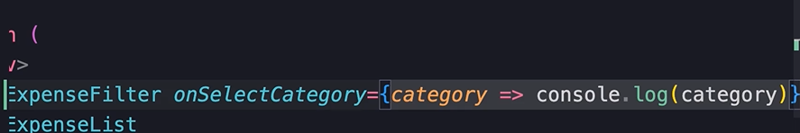

HOME
Building ExpenseFilter
Create New File
Now we want to have a filter for showing our items.
For this mini app we only want to filter by category, but in the
future we might want to filter by different parameters.
In the components folder of the expenseTracker component create this
file...
Select Element
In this component all we want to return is a select element.
So add it here...
Adding options
Remove the name and id, then add the first option...
We also need an option for each category. For now, we are hard coding
the categories, but in the future we'll come back and make ths part
dynamic.
So add some more options...
App component does the work
This component is purely responsible for showing filters. The actual
act of filtering though, will be done in the App component.
That's because the App is where we maintain the state.
So when the user selects a filter, we should notify the app component,
and the app component will take care of filtering the data.
ExpenseFilter Props
Next we want an onSelect prop, so we can pass a funtion from the app
component when a category is selected.
Our prop will be a funtion that takes the given category as a string,
and returns void.
So create that prop, and add it to the param...
onchange event of select element
Now we handle the onChange event of the select element, and pass an
arrow function that calls onSelectCategory.
We need an event parameter in our arrow function, and we need to pass
the value of the event target to onSelectCategory.
It should look like this...
Test what we have
So let's see what we have so far.
Open the App component.
And add our ExpenseFilter...
For now, just use an arrow func to log something with the prop...

We shoud get this...
The filter is to close, so use bootstrap to add some bottom margin...
Much better...
Now if you select a category you can see it on the console.
Filtering Logic
The final part is the actual filtering.
For that, we need another state var in the app for representing the
selected filter.
When that filter changes, the app component will re-render, and the
list of expenses will be updated.
So, create a state var called 'selectedCategory' and initialize it to
an empty string...
Now instead of loging the selected category to the console, we call
setSelectedCategory, and pass the category object from the arrow
function param.
Like this...
At this point the state is updated, so the app component will
re-render.
Displaying Logic
Next, instead of passing all the expenses to the ExpenseList
component, we want to pass the filtered list.
For that we need to create a local const to check if selectedCategory
is truthy, if it is, then call expenses.filter, and return all
expenses in the given category.
OTHERWISE, set the visibleExpenses to expenses
Like this...
Now just pass the visibleExpenses, instead of expenses...
IMPORTANT NOTE
What's happening is, the expenses var holds all the expenses.
But visibleExpenses holds only the ones the user is going to see based
on the selected filter
If the user has selected a category, we filter the expenses by the
category, otherwise we return alllll the expenses.
The reason we aren't using a state var for the visible expenses is
because thats redundant. This is something we can calculate from the
existing state vars.
So don't create state vars for things that can be calulated using
existing state vars.
That's it for filtering! Next we create the expense form.